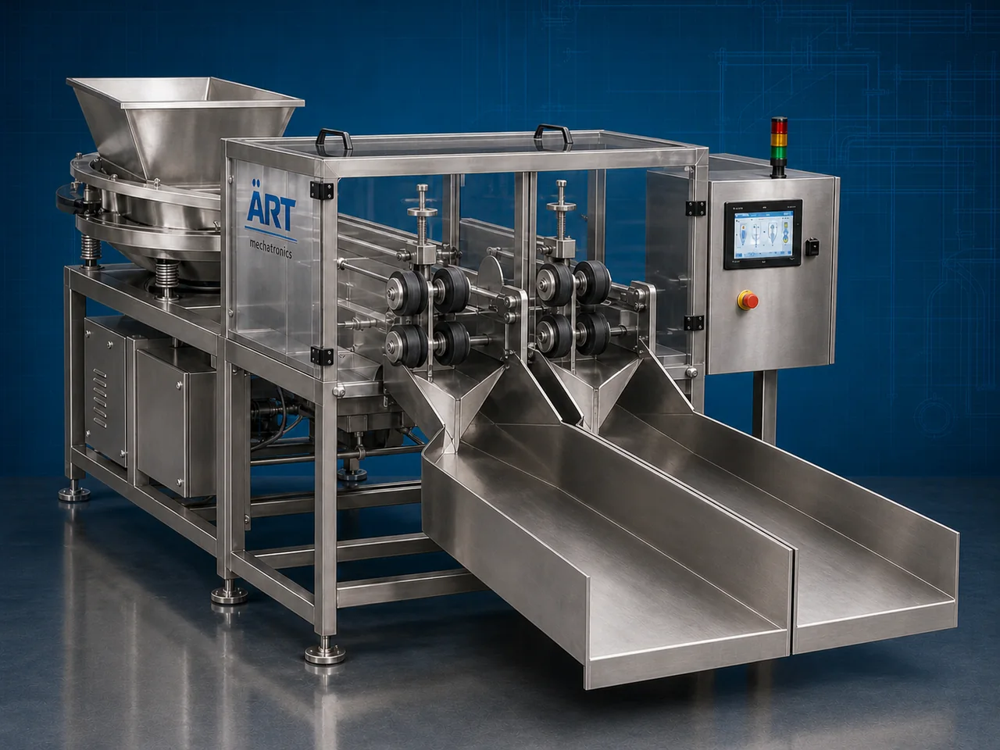

Splitter Machine (Industrial Material Splitting System)
A Splitter Machine, also known as an Industrial Splitting Machine, Material Splitter, Product Splitting Machine, or Industrial Cutting & Splitting System, is an advanced industrial processing solution designed for splitting, dividing, cutting, cracking, portioning, breaking, and high-speed material processing operations across food processing, supari processing, nut processing, wood processing, plastic, rubber, agro products, and industrial manufacturing industries.

About the Splitter Machine
Splitter systems are widely used for:
- Supari splitting operations
- Nut and seed splitting
- Food portion cutting
- Wood splitting operations
- Plastic and rubber material splitting
- Industrial material division
- Product size reduction
- Continuous industrial processing operations
The machine improves:
- Product splitting accuracy
- Production efficiency
- Material consistency
- Processing speed
- Labor reduction
- Product uniformity
- Industrial productivity
Industrial splitter machines use:
- Heavy-duty splitting blades and cutters
- Servo synchronized splitting systems
- PLC and HMI automation controls
- Precision feeding mechanisms
- Rugged industrial construction
to automatically split and process materials with superior accuracy and high production efficiency.
Industrial splitter machines are widely used in industries such as:
Food processing industries Supari processing industries Nut processing industries Wood industries Plastic industries Rubber industries Agro industries Industrial manufacturing industries
where precision splitting, continuous processing, and high-speed industrial productivity are essential.
The machine is highly suitable for:
- Supari splitting operations
- Nut and seed processing
- Food portion splitting
- Wood and agro material processing
- Industrial material division
- Automated production line splitting systems
ART Mechatronics offers high-performance splitter machines, engineered for continuous industrial operation, precision splitting performance, rugged construction, and reliable long-term industrial productivity.
Working Principle of Splitter Machine
- 1. Material Feeding & Loading Raw materials are automatically or manually fed into splitting section for processing operation.
- 2. Material Positioning & Blade Alignment Process Machine automatically aligns materials against precision splitting blades before splitting operation.
Servo synchronization ensures smooth material movement and accurate splitting operations.
- 3. Splitting & Cutting Operation Machine handles processing of: ✔ Supari ✔ Nuts and seeds ✔ Food products ✔ Wood materials ✔ Plastic products ✔ Rubber materials ✔ Agro products ✔ Industrial materials
accurately and continuously.
- 4. Precision Splitting & Portioning Process Machine performs: Splitting Dividing Cracking Cutting Portioning Material size reduction
for efficient industrial processing operations.
- 5. Intelligent Automation & Safety Integration Optional systems include: Automatic feeding systems Safety guarding systems Dust extraction systems Variable speed controls Industrial motor protection systems
- 6. Finished Product Discharge Processed materials discharged automatically for: Further processing Drying operations Packaging systems Warehouse storage Export shipment handling
Types of Splitter Machines
- 1. Supari Splitter Machine Designed for: ✔ Betelnut splitting and processing applications
- 2. Nut & Seed Splitter Machine Suitable for: ✔ Nut processing and agro product systems
- 3. Food Portion Splitter Machine Uses: ✔ Food cutting and portioning operations
- 4. Wood & Biomass Splitter Machine Designed for: ✔ Wood processing and biomass splitting systems
- 5. Heavy Duty Industrial Splitter Machine Suitable for: ✔ Continuous industrial splitting operations
- 6. Fully Automatic Splitting System Designed for: ✔ Complete industrial processing automation lines
Industries Using Splitter Machines
🌰 Supari Processing Industry Betelnut splitting, cutting, and industrial supari processing systems. 🥜 Nut Processing Industry Nut splitting, seed processing, and food ingredient preparation systems. 🍅 Food Processing Industry Food portioning, ingredient preparation, and industrial splitting systems. 🪵 Wood & Biomass Industry Wood splitting, biomass preparation, and industrial processing systems. ⚙️ Plastic & Rubber Industry Industrial material cutting and splitting operations. 🛒 FMCG Industry Food ingredient preparation and industrial material processing systems.
Features & Advantages
- High-speed automatic splitting operation
- Accurate and uniform product splitting systems
- Heavy-duty industrial splitting technology
- PLC and automation control systems
- Improves production efficiency and product consistency
- Reduces manual processing dependency
- Supports multiple industrial materials and products
- Reliable long-term industrial performance
- Smooth integration with industrial production lines
Technical Highlights
Machine Type: Splitter machine Industrial splitting system Material splitting machine Material Compatibility: Supari Nuts and seeds Food products Wood materials Plastic products Rubber materials Industrial agro products Integration: Splitting blade systems Automatic feeding systems Industrial safety systems Dust extraction systems Features: PLC control system Touchscreen HMI Heavy-duty steel construction Variable speed controls Continuous duty operation Applications: Material splitting Food portioning Industrial cutting Product division Agro processing Size reduction Automation: Semi-automatic Fully automatic industrial systems
Turnkey Splitting Solutions
ART Mechatronics offers: Complete industrial splitting systems Automatic material processing solutions Heavy-duty industrial automation systems Production line integration systems Installation & commissioning After-sales service & AMC
Why Choose Art Mechatronics
Expertise in industrial processing and automation systems Customized splitting solutions for multiple industries High-performance and rugged splitting technology Advanced PLC and automation systems Proven industrial processing performance across sectors
Applications
Supari Processing Plants Nut Processing Facilities Food Manufacturing Industries Wood & Biomass Processing Units Plastic & Rubber Industries Industrial Manufacturing Industries
Industries that use the Splitter Machine
Related Process Equipment machines
Get pricing & specs for the Splitter Machine
Share the product, target capacity, current process and plant location. These details help our engineers discuss the right machine or line configuration.
One partner, from design to start-up
ART Mechatronics designs, manufactures, installs and commissions your Splitter Machine solution with regional presence in India, UAE and Thailand.